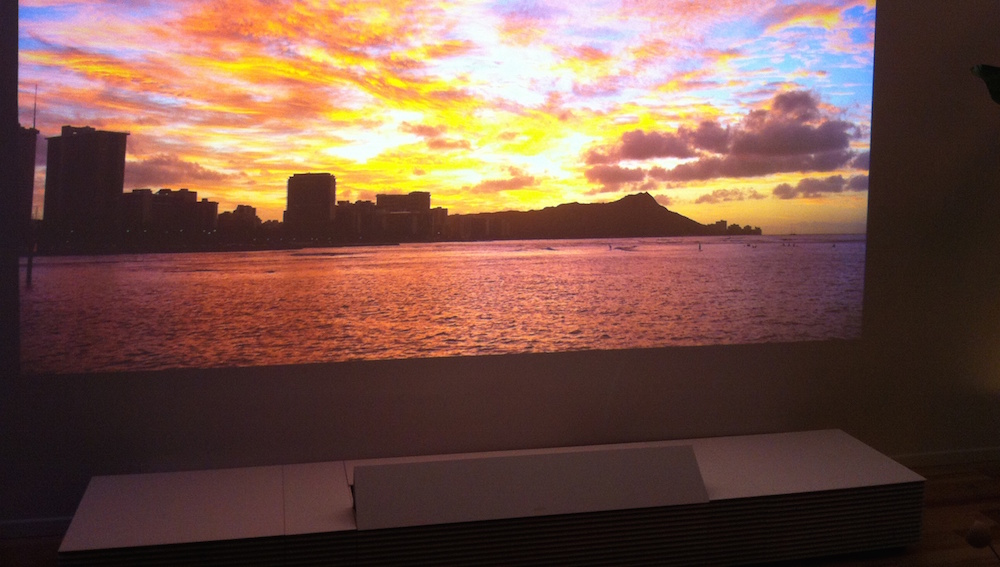
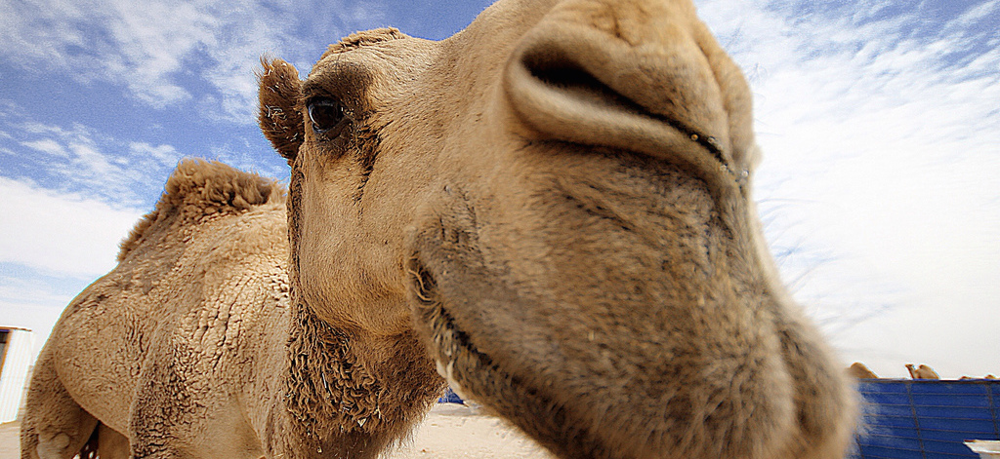
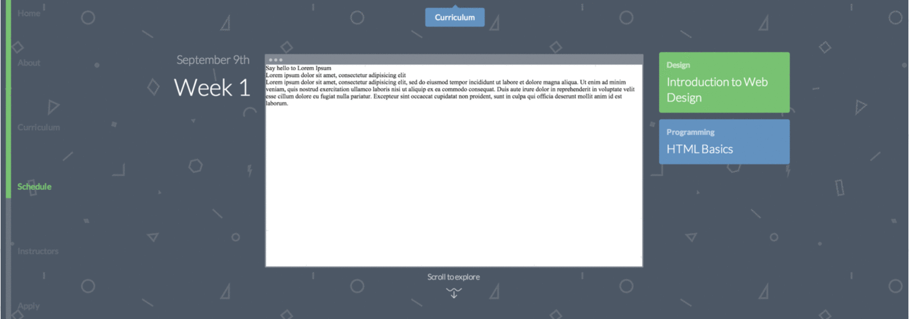
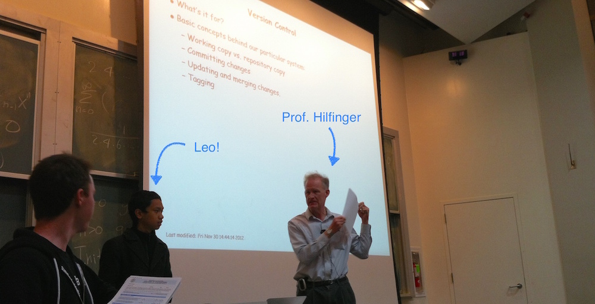

Two Years of CS
Friday, January 2, 2015
I recently finished my second year of CS. Reviewing my first year post reminds me
of how much has changed in this year. I decided to write another post to reflect on this past year and to
set some future goals.
Being able to read my thoughts on last year brought back lots of encouraging memories. I was reminded
of God's faithfulness demonstrated through the people and opportunities He placed in my life.
Hopefully, this post will serve the same purpose.
1. Last Year's Checklist
Speaking of last year, let me start off with some notes on things I had been looking forward. Some things
happened, others were abandoned, and still others are in progress.
- My family did go to CES together, and we had a wonderful time viewing new technology, listening to speakers, and having fun in Vegas. Of the devices, I was most enamored with Sony's 4K ultra short throw projector, and I was thrilled to see John Chambers speak on the Internet of Things.
- Working on various side projects like the UPE website and the Web Design Decal Portal gave me the chance to learn a back-end framework (Django).
- Due to a rough spring semester, I left CSUA (Computer Science Undergraduate Association) leadership. (I'll explain more below.)
- I decided not to apply for Cal Blueprint due to time commitments. But that's okay, because I have plenty of side projects to work on.
- I still haven't fully participated in a hackathon. However, I am no longer so convinced that giving up my sleep would be such an enjoyable experience.
- I still love Java, and I am still very happy studying CS.
- Various challenges and opportunities have been growing my character.
- I've built some great new friendships, gotten to know some old friends better, and grown closer to my family.

Completely enamored with Sony's short throw projector
2. Computer Architecture, Algorithms, Real Analysis
In Spring 2014, I took CS 61C (Computer Architecture), CS 170 (Algorithms), and Math 104 (Real Analysis).
I really enjoyed them all, and my only regret is that I was unable to dedicate the time necessary to fully
learn the material.
In CS 61C, I was introduced to a variety of foundational concepts in computer architecture like virtual memory,
caching, processors, and parallelism. The class didn't go into too much depth on any particular topic, but it
greatly increased my general understanding of how things fit together.
I had bits and pieces of information in my head that didn't quite fit together as a cohesive whole. For example,
I knew that data was represented as bits, I could write a program in a high-level language, I had a general
notion of compilation as turning my program into bits, and I could draw simple circuit diagrams with various
gates. But I had no idea how my high-level program - even in the form of bits - caused anything to happen in
the processor and led to the incredible results I could see.
61C changed that and provided clarity on a number of different of topics. I finally saw connections between
those pieces of information, and it made things feel even more meaningful and interesting than they already
were. It was also inspiring to learn about brilliant ideas of both pioneering computer scientists and
modern research scientists.
One of my favorite memories was when Prof. Dan Garcia announced during lecture that we were finally going to
connect software with hardware. He dramatically displayed The Creation of Adam by Michelangelo and
blasted the Hallelujah Chorus as students cheered.
The hand of God meets the hand of man
CS 170 was another great class. I loved learning about different algorithms, and I particularly enjoyed
the dynamic programming section. If I could retake any class at Berkeley, this would be the class.
We were introduced to so many cool concepts, and it would be nice to have another chance to absorb all the
material.
Taking Math 104 was a bittersweet experience. On one hand, it completely changed the way I thought about math,
and it was a stimulating learning experience. On the other hand, the rigor of real analysis was very
difficult for me to grasp conceptually, and I think I entered the course ill-prepared to write formal proofs.
Before 104, I associated math with numbers and concrete facts like "the square root of 2 is irrational."
However, I quickly realized that upper-division math is very different from the math that most students are
exposed to starting from kindergarten. Even lower-division math in college assumes various theorems
as given and asks students to calculate the answers to problems.
Real analysis was more about proving things that I had always taken for granted in my study of math. It
started with clear definitions that made me realize that concepts in math are not necessarily matters of
correct or incorrect, but are rather ways of defining and characterizing the world.
I could no longer assume that "the square root of 2 is irrational." I had to prove that it was, given some
axioms and a well-defined field. It was insufficient to convince myself that something was correct because it
made sense; proofs had to be constructed rigorously.
In short, the course was an eye-opening learning experience, but it was also something that felt insurmountable
at times. It was a humbling experience that gave me a deep respect for math and those who study it.
3. Overcommitment
If there was one piece of advice I could have given myself before I entered college, it would be to avoid
over-committing. I feel like my mind uses a greedy algorithm in selecting opportunities and ways to spend my
time and energy. This often leads to a schedule and load that is far from optimal.
At Berkeley, there is an endless stream of activities and possibilities. In addition to taking three challenging
technicals in Spring 2014, I was working part-time as a web developer for the Monarch Initiative (LBNL),
liaising with industry and the EECS department as VP Industrial Relations of the CSUA, and involved with church
and a small-group. I was also a TA for the Web Design Decal and commuting once a week to Rosa Parks Elementary
School to assist with a second grade math class as the field work portion of a CalTeach class I was taking.
This cumulative load was far too taxing. I didn't have enough time to study for my classes, leading to my
worst academic performance in my time here at Berkeley. I additionally felt very mentally and emotionally
drained. To make matters worse, I started having some problems with other individuals. This was the straw that
broke the camel's back.

Why yes, I did just call myself a camel
In order to preserve my sanity and love for CS and the CS community, I decided to step down from CSUA leadership.
Thankfully, Maajid was able to replace me, and he did a brilliant job. While I stayed active by helping with
Startup Fair and other events, this was a much-needed relief.
Unfortunately, I was still overloaded, but there wasn't much I could do for the remainder of the semester but
push on. This was one of the lowest points of my time in college, but I thankfully had the support of my family
and some wonderful friends like Elizabeth Kim and my roommates.
Thankfully, I learned from this experience and realized that I needed to make wise choices to achieve balance
in my life. Several things happened after this realization. I stopped working at LBNL due to an offer to TA for
CS 61BL over the summer, and I made my schedule far more manageable in the next semester.
I ended up working at LBNL on the Monarch Initiative for roughly 8 months. I learned a lot about working on a
long-term project as part of a large team. My bosses were very kind and intelligent people, and it was great
to see their vision develop as the project progressed. Overall, it was an ideal experience for my first CS job.
4. Web Design Decal
In the spring, I became a TA for the Web Design Decal (WDD). This entailed reading
applications, grading homework, responding to emails and Piazza posts, holding office hours, and teaching
short hands-on segments during lecture where I worked through examples of what the students were learning.
I enjoyed teaching and realized that I particularly liked running logistics. I was very grateful to the WDD
instructors Shawn Park, Jeff Zhan,
and Kevin Liang for giving me the opportunity to join the staff. I also became friends with the other TAs
(Adam Sebti, Andy Qin, Ingrid Hong,
and Philip Su).
After the spring semester, we had some staff changes as Jeff graduated, Andy transitioned to be the
programming instructor, and two new TAs joined the team (Tomas Vega and
Hamza Ahmed). My fellow staff members are all really fun, talented,
and motivated individuals, and I'm happy to call them my WDD family.
We had lots of goals for the next semester, so we worked on several projects that summer. Many exciting
developments resulted from that time. Andy secured departmental funding for a live webcast. Ingrid designed
a cool logo for the class, and we rebranded all our lecture slides and homework materials. Shawn re-designed
the website, and we moved to a new domain name (wdd.io) hosted on Webfaction, which generously donated free hosting.

Shawn's awesome redesign adds styles to a window as users scroll past lecture topics
One of our biggest achievements that summer was creating and launching WDD Portal, a Django-based site for
students and staff. Shawn and Tomas worked on the front-end (with Shawn additionally contributing to back-end), and
Philip and I worked on the back-end, with Django guidance from our friend Rachit Nanda.
In prior offerings of the course, one of our biggest pain points was the way we collected homework
assignments from and reported grades to students. In the first two semesters, students emailed HMTL, CSS,
and JS/jQuery files to our email account and staff would download the files to grade them. In the first semester,
students only found out their grade twice in the course of the semester; and in the second offering, we started
using Canvas, a site where we added grades for students to view.
This workflow was quite problematic because assignments could be lost, we had to manually sort which
staff member graded each assignment, and it took so many clicks to grade an assignment. (This inefficiency
quickly accumulates with 100 students and ten assignments per student.)
One of the major features of Portal was to provide a place for students to upload their assignments. Staff
can then click a button to open the assignment (a webpage) and enter grades and feedback on the same page.
Portal also automatically divvies grading among the staff, ensuring that assignments are not graded multiple
times or forgotten.
The site has a bunch of other useful features, like a gradebook for students and staff, attendance tracking,
and resource hosting. We also still have a lot of improvements and features to add, so development is not yet
finished. (I may write another post on Portal in the future.)
One of my favorite memories with the WDD family was our summer retreat to Santa Cruz. We rented a beautiful
flat through Airbnb, played at the Beach Boardwalk, went shopping in Trader Joes for breakfast
materials, and cooked the aforementioned breakfast. We ate lots of yummy food and had even more memorable
conversations. As we bonded, we got even more excited for the next semester of teaching students.

Tomas, Hamza, Philip, Andy, Adam, me, Shawn (sadly missing Ingrid)
Some things went really well with the semester following that summer. The live webcast was well-received both by
students who wanted to review lectures and by viewers from all over the world. One of the most exciting
moments for the team was when we received a message from a designer in Tel Aviv, Israel, thanking us for
helping him learn to build websites. It definitely made my day.
Portal likewise received lots of positive feedback along with constructive criticism and feature requests.
It was really satisfying to see our project being used regularly by hundreds of students. And seeing how our
users interacted with the site gave us lots of ideas for future improvement.
We also had a great final project presentation, where the top 12 students presented to their fellow students,
friends, and live viewers. Shawn did a great job building an impressive judging panel of professors and industry
developers/designers, and some of the projects blew me away.
This website for Cross-Cultural Student Development by Andrea Ikeda
was my personal favorite. I thought she did an excellent job using the design elements in UC Berkeley's
branding guidelines in a very clean, fastidious, and creative
fashion. I was especially impressed by her attention to detail and design aesthetic. Additionally, Andrea is
a true success story for WDD because as an Ethnic Studies and Gender & Women's Studies major, she came
in with no prior web design knowledge. This makes her success all the more impressive.
Alongside all these wonderful occurrences, however, were some not so great things. We had an unprecedented
number of academic dishonesty incidents, and an extremely high 20% of students did not pass the course.
After retrospective discussion, we realized this was because in our excitement about all the wonderful
enhancements, we had not adequately outlined our expectations and guidelines. Many students had
come into our class underestimating the time and energy we required. Thus, this coming semester will be a chance
to get back to the basics and refine our policies and course material and focus on being first and foremost
good teachers.
Our staff is again morphing as Hamza is transitioning to be co-design instructor alongside Shawn, and we're again
growing with the fantastic additions of Eric Liang and Jessica He. The only
sad news is that my beloved friend Tomas will be leaving in order to focus on other passions like the connections
between hardware and the mind. I wish him all my best; he will always be WDD family.
5. CS 61B/L
In the summer, I got an offer from Edwin Liao (the summer instructor) to be co-head TA for
CS 61BL, the lab-based version of CS 61B (Data
Structures & Programming Methodology in Java). I had wanted to TA for a EECS department class for a while now,
so it was very exciting news. I wrote about my experiences as a first-time TA
in an earlier post.
I got rehired again for the fall semester under Profs. Paul Hilfinger and Josh Hug. It was unbelievable to TA
for Prof. Hilfinger because he had been my professor when I took 61B. And it was great to work with Josh in his
first class at Berkeley as an official lecturer. (He recently transferred from Princeton.)
I recently found this photo while going through my archives. It had been sentimentally taken on the last day
of 61B in Fall 2013 when I was a student filling out course surveys. When I took the photo, I only knew
Prof. Hilfinger. Only now do I realize that one of the HKN candidates administering the survey was Leo Colobong,
now one of my current fellow TAs and a good friend.

It's crazy to think of where we are now!
I had lots of fun as a TA this past semester. I got the fabulous opportunity to teach the
CS Scholars section, and it was a real pleasure to teach such attentive and hard-working students. (I've somehow
gotten lucky with awesome students every semester.)
Each semester, I also find more reasons to love teaching. This semester, I realized that teaching has been growing my
character. There are always different challenges that teach me to respond with patience, wisdom, calmness, and
understanding.
For example, I would honestly say that one of the weaker aspects of my personality is my ability to empathize with
others and convey this empathy to them. One of my continual prayers is that God would constantly take my heart of
stone and give me a heart of flesh as in Ezekiel 36:26.
So one of my personal goals for teaching is to actively care about the development and well-being of my students and
to let them know that I care about them and will be there for them.
When I read my anonymous feedback for Summer 2014, I was very happy that fifteen of my sixteen reviews were very
positive. There was, however, a single negative review: "I do not think she is caring about students very much. She
should understand some students are weaker than other students." My initial reaction was disbelief then annoyance.
I had sincerely cared for each and every one of my students, and I was confused as to why one of them thought
I was not caring.
However, I realized that I could always improve and decided to again try my best to connect with my students. This
semester, I tried out something new. At the middle of the semester in the midst of midterms and projects, I felt
that many students were struggling and losing hope. (The midpoint is always the hardest.) So I sent emails to all
my students asking them how they were doing and how they felt. I asked them to tell me about anything they wished to
talk about.
I was overwhelmed by the responses. So many of them emailed back giving me a little opening into their minds and lives.
Some asked me questions like how to get into web design or if I had general tips for the projects or exams. Others
wrote that they were happy and feeling challenged in a good way by the class. Still others wrote that they felt lost
and didn't know how to catch up. And some of my students even told me about situations in their personal lives that
they were struggling with.
I responded to each and every email, and even started some long-term conversations with students. And I thoroughly
enjoyed it. And that's when I sort of had a breakthrough. I realized that one of the best ways to feel empathy for
others was to get to know them. Once you know someone, you can't help but want to help them, and it becomes
incredibly easier to understand them and their thought processes.
This coming fall semester will be my third time TAing for 61B, and I am co-head TA over a staff of 23 TAs
under Prof. Josh Hug again. It should be an exciting time, as we expect enrollment of roughly 1200 students.
We also have tons of plans to revise the curriculum and create a new website and autograder system.
But above all else, what I look forward to most is to meet my new students and to get to know them. I want to
give them the best possible learning experience, and I want to also grow more in knowledge and character.
6. Operating Systems, Internet Architecture
If I were to characterize my fifth semester at Berkeley, I would call it a mind-blowing experience. Academically,
I took a far lighter load than in past semesters in order to have time for my TA positions. However, I felt
that I still learned and grew significantly.
CS 162 (Operating Systems) was an astounding class in a similar vein to CS 61C. It was far narrower in scope
than previous classes, and I really enjoyed the deeper exploration into the material as I got a chance to
work with concrete examples of high-level concepts.
For example, our first two projects involved building features in C into a mini operating system called
Pintos. For our first project, we explored concurrency and scheduling by
implementing priority scheduling of threads and priority donation from high-priority threads to blocking
threads holding locks. It was amazing to read through the source code for the OS and see how things like
locks, semaphores, and threads were represented.
Our second project gave us a better view of how the OS interacts with user programs as we implemented many
common syscalls like exec (Pintos version of UNIX fork + exec), wait, read, write, etc. I really enjoyed
seeing a simple view of the file system and reading an implementation of file descriptors.
For the third project, we implemented parts of a distributed key-value store, using 2PC (Two-Phase Commit) as
a protocol to track and log interactions between client, master, and slave servers. It was a pretty cool project
that gave me a deeper appreciation for far more complicated distributed systems and a curiosity about how they
deal with consistency, availability, and partition tolerance. I no longer look at Google Docs or iCloud the
same way.

A 2PC diagram
162 was one of my favorite classes at Berkeley, if not my favorite. I really enjoyed it because of the concepts
that were covered, the dedicated teaching staff (Prof. David Culler & GSIs), the interesting projects, and my project
group. I now have such a deep respect for the kernel developers of modern operating systems like Linux and OSX.
(Sorry, Windows, but CreateProcess is not as awesome as fork + exec. Just kidding.)
Speaking of my project group, the three guys I worked with were lots of fun and made everything even more
enjoyable. I was really thankful to have such a dependable and intelligent group. I learned a lot from them
about operating systems, good programming practices, Vim, and way too much about Taylor Swift & Ellie Goulding.
CS 168 (Internet Architecture & Protocols) was the other technical class I took in the fall. I thought it
complemented material from Web Design Decal and CS 162 really well. From WDD, I knew how to create web sites
by hosting publicly-accessible files on servers. From 162, I knew about sockets in the operating
system and server/client relationships.
168 material fit really well into the gap between the two, explaining how files are chunked into packets and
sent over the Internet using protocols like TCP and IP. It was also great to see how routing protocols like
OSPF (link-state) and RIP (distance-vector) implement graph theory algorithms discussed in 170 (Dijkstra's and
Bellman-Ford, respectively).
I also really appreciated how the Internet is such an active area of research and how that research is so
heavily impacted by practical concerns like congestion, packet loss, and datacenter networks.
One of the best moments of the class was when we stepped through the process of a computer connecting to a
LAN and requesting a webpage. It was really cool to see how all the different protocols we had been learning
about worked together to produce a result so familiar.
7. Planning for the Next Year
This coming semester, I will be taking CS 164 (Compilers) with Prof. Hilfinger and CS 186 (Databases). I am
really looking forward to both classes with great partners. I'll be a third-time TA for both Web Design Decal
and CS 61B under Prof. Josh Hug.
I have so many hopes and dreams for this coming semester, but they can all be encapsulated as three desires:
(1) that I would grow in knowledge and enthusiasm for CS, (2) that I would grow in character and love for God, and
(3) that I would grow relationships with more wonderful people.
To those of you who are in my life, thank you. To the author of my salvation, thank you. Please continue to watch
over me as I enter this third year of CS.